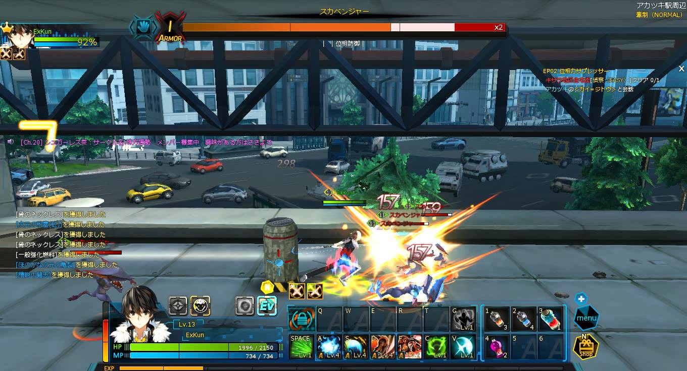
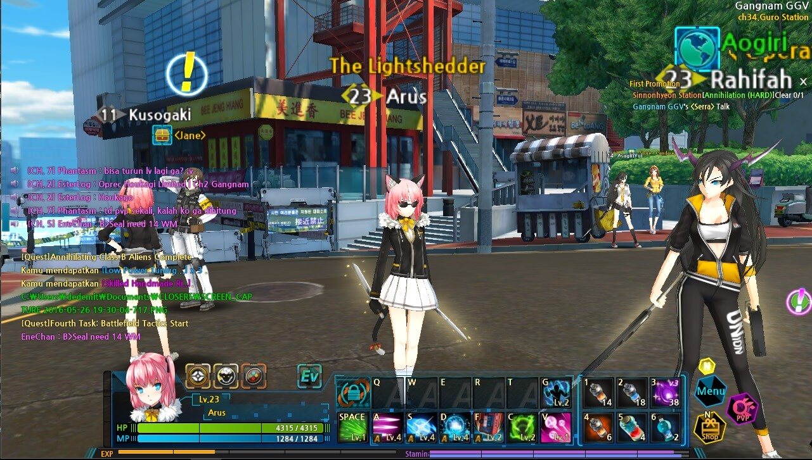
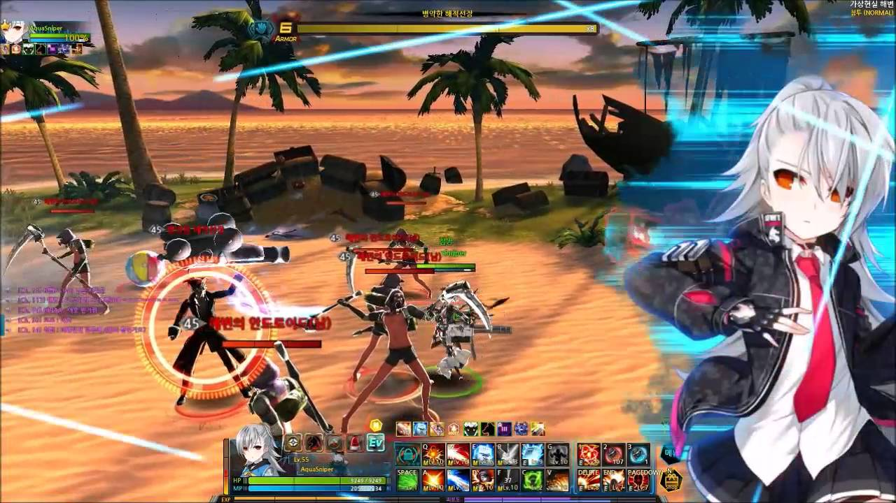
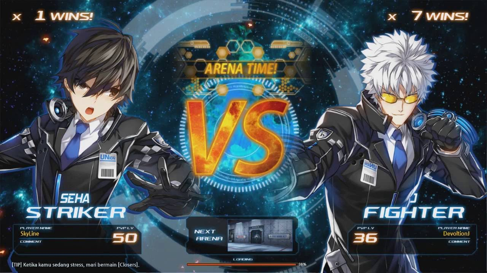

GAME PLAY

Memainkan Game Closers dengan cara memakai skill yang ada dan berbeda pada masing-masing karakter game tersebut, serta di bantu dengan combo attack. Selain itu, masing-masing karakter dapat meregenerasi MP yang diperuntukkan untuk mengaktifkan skill yang tersedia.
Town or Map
Di saat setelah masuk dalam game ini, para penikmat game akan memasuki kota, yaitu New Seoul. New Seoul sendiri di bagi menjadi 8 yaitu, Gangnam GGV, Guro Station, Shin Gang High School , G-Tower Rooftop, Disaster Recovery Centre, International Airport, Plane Gates, Lambs Keeper Bridge. Awal mula, penikmat game akan memulai dari kota pertama yaitu Gangnam GGV, setelah mengikuti quest yang ada hingga akhir, maka akan lanjut ke kota berikut nya, yaitu Guro Station, dan setelah dari Guro Station, maka berikutnya pun turut seperti itu.
Dungeon or PVE
Fitur yang diberikan untuk para penikmat game ini untuk menjelajahi dan mengikuti alur cerita dari game Closers untuk melawan para monster-monster dan bos para monster dari Dimensional Gates, untuk mendapatkan equipment, material, item, menaikkan XP karakter agar karakter bertambah kuat, dan dari XP tersebut bisa menaikkan level karakter, serta akan mendapatkan skill point saat naik level dan skill point tersebut untuk menaikkan skill karakter pemain yang ada hingga maximum.
Dungeon juga mempunyai tipe, yaitu :
1. Normal Dungeon
Di dungeon ini memiliki 4 tingkat kesulitan, terdiri dari :
- Easy
- Normal
- Hard
- Very Hard
2. Training Program
Dungeon ini hampir ada di setiap kota, tetapi tidak ada di kota Gangnam GGV, Disaster Recovery Centre, dan Plane Gates. Dungeon ini memiliki batasan untuk masuk ke dalamnya, yaitu dinamakan Daily Dungeon. Dungeon ini juga memiliki kelebihan yaitu dapat menaikkan XP 2x lipat dari dungeon biasa. Serta bisa mendapatkan item ataupun equip yang langka.
3. Special Dungeon
Special Dungeon adalah dungeon terakhir dan dapat dibuka jika sudah menyelesaikan seluruh dungeon dan seluruh quest pada masing-masing map. Special Dungeon yang ada antara lain :
- Emergency Defense Dungeon
- Lure And Mop Dungeon
- Skyscraper Dungeon
- Labyrinth Dungeon
- Turrent Defense Dungeon
- Inside Plane Gate Dungeon
- Hall of Dragon
Replica Dungeon

Replica Dungeon merupakan fitur terbaru pada game ini. Pada fitur ini, para pemain game ini dapat memainkan sebuah dungeon yang dibuka pada waktu tertentu saja. Pada Replica Dungeon bisa mendapatkan item-item yang bagus. Selain itu, Replica Dungeon dapat masuk sesuai dengan level pada masing-masing karakter. Setelah menyelesaikan Dungeon ini akan mendapatkan token dan dapat ditukarkan dengan item-item yang berharga.
PVP
Fitur ini diperuntukkan para penikmat game ini untuk mengasah skill bermain mereka dalam menghadapi orang lain yang turut menikmati game ini. Disini pula para pemain dapat menaikkan level PVP mereka sendiri, dan dapat membuat rekor mereka dan akan terdaftar di daftar PVP Arena dan mendapatkan reward setiap sabtu saat jadwal reset PVP Arena di setiap minggunya.